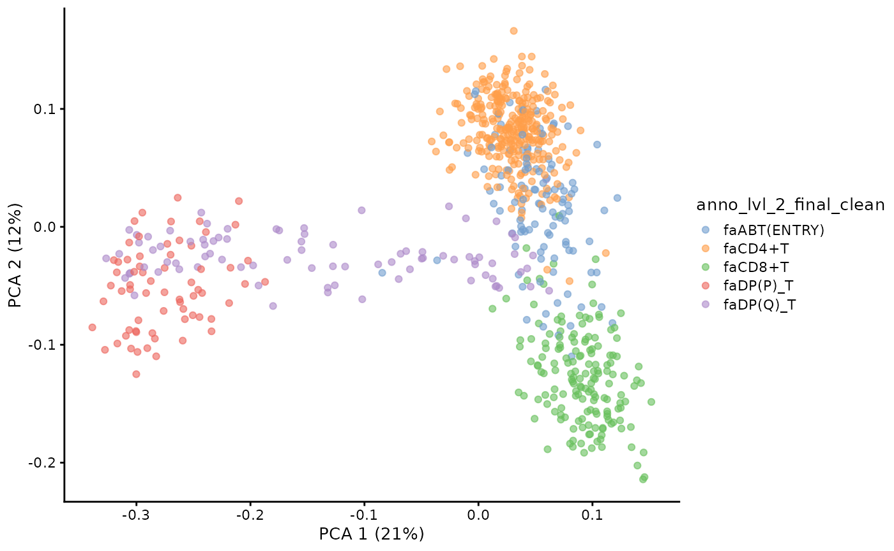
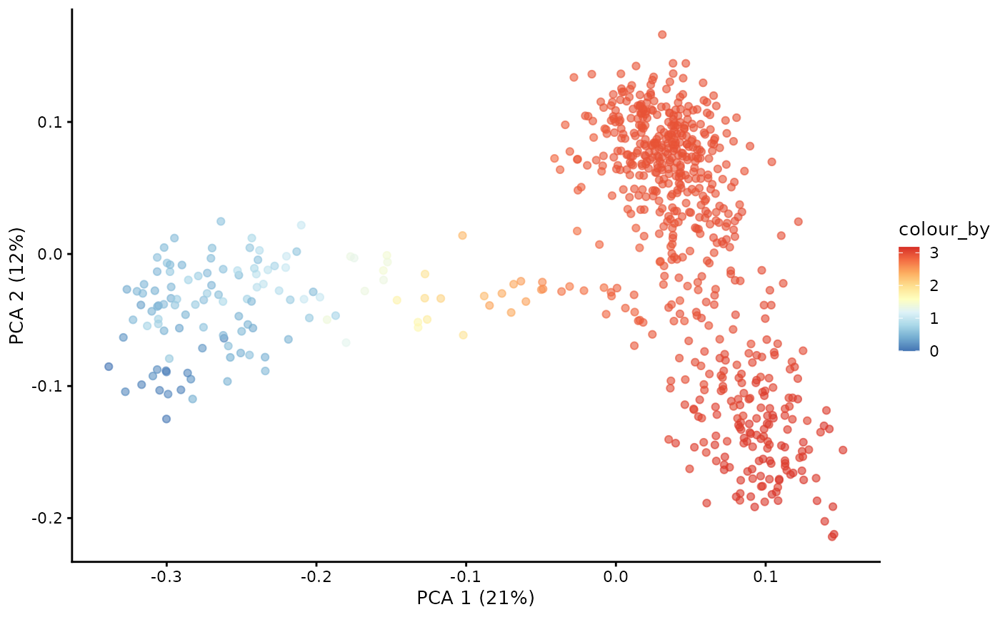
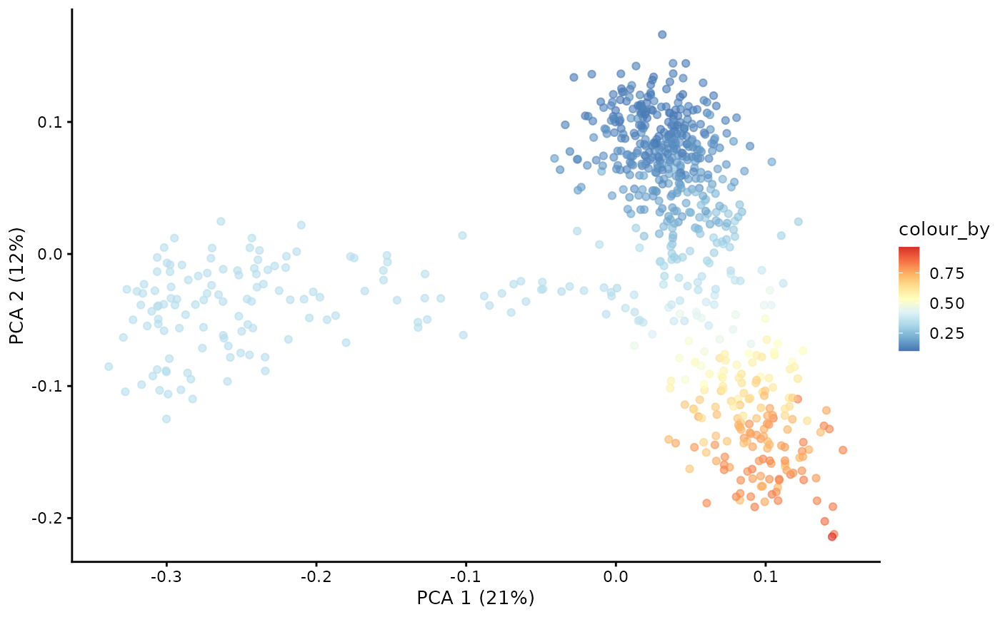
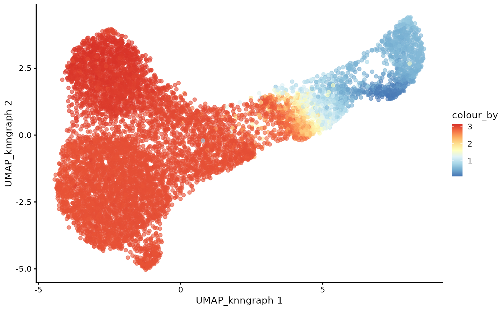
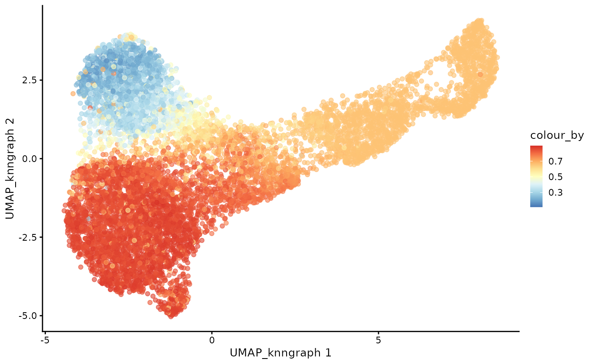
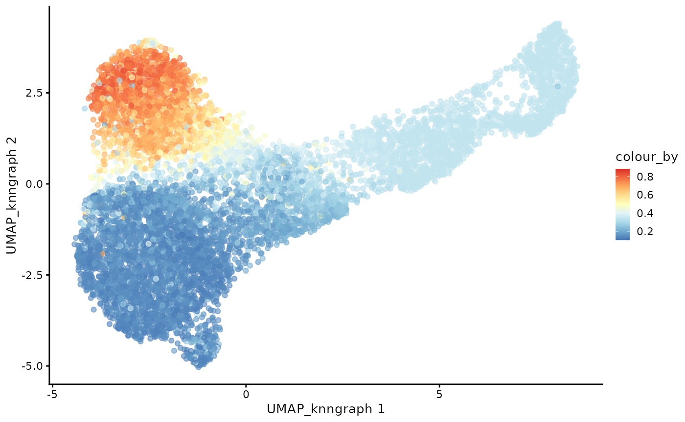

Single-cell Immune Repertoire Trajectory Analysis with dandelionR
2024-12-04
vignettes.rmdForeword
Welcome to dandelionR!
dandelionR is an R package for performing single-cell
immune repertoire trajectory analysis, based on the original python
implementation in dandelion.
It provides all the necessary tools to interface with scRepertoire and a custom implementation of absorbing markov chain for pseudotime inference, inspired based on the palantir python package.
Installation
You can install dandelionR from GitHub with:
if (!requireNamespace("devtools", quietly = TRUE))
install.packages("devtools")
if (!requireNamespace("BiocManager", quietly = TRUE))
install.packages("BiocManager")
if (!requireNamespace("scater", quietly = TRUE)) # only for the tutorial
BiocManager::install("scater")
devtools::install_github('tuonglab/dandelionR', dependencies = TRUE)Usage
This is a work in progress, so please feel free to open an issue if you encounter any problems or have any suggestions for improvement.
Filter the data
subset the object to cells with paired chains, and prepare appropriately named and formatted columns for the pseudobulking functions to use as defaults
sce_vdj <- setup_vdj_pseudobulk(sce_vdj, already.productive = FALSE)
#> Checking productivity from productive_abT_VDJ, productive_abT_VJ ...23270 of cells filtered
#> checking allowed chain status...4 of cells filtered
#> Extract main TCR from v_call_abT_VDJ, d_call_abT_VDJ, j_call_abT_VDJ, v_call_abT_VJ, j_call_abT_VJ ...Complete.
#> Filtering cells from v_call_abT_VDJ_main, j_call_abT_VDJ_main, v_call_abT_VJ_main, j_call_abT_VJ_main ...202 of cells filtered
#> 8524 of cells remain.plot the filtered data
plotUMAP(sce_vdj,color_by = "anno_lvl_2_final_clean")Milo object constructing and neighbour graph construction
use miloR to create pseudobulks. Construct neighbor graph with many neighbors. Sample the representative neighbours form the objects.
library(miloR)
#> Loading required package: edgeR
#> Loading required package: limma
#>
#> Attaching package: 'limma'
#> The following object is masked from 'package:scater':
#>
#> plotMDS
#> The following object is masked from 'package:BiocGenerics':
#>
#> plotMA
#>
#> Attaching package: 'edgeR'
#> The following object is masked from 'package:SingleCellExperiment':
#>
#> cpm
traj_milo <- Milo(sce_vdj)
milo_object <- buildGraph(traj_milo, k = 50, d=20, reduced.dim="X_scvi")
#> Constructing kNN graph with k:50
milo_object <- makeNhoods(milo_object, reduced_dims="X_scvi", d=20)
#> Checking valid object
#> Running refined sampling with reduced_dimConstruct umap on milo neighbor graph
milo_object <- milo_umap(milo_object)
#> Loading required namespace: Seurat
#> 05:42:30 UMAP embedding parameters a = 0.9922 b = 1.112
#> 05:42:30 Read 8524 rows of sparse distance matrix
#> 05:42:30 Finding nearest neighbors from sparse matrix
#> 05:42:38 Commencing smooth kNN distance calibration using 1 thread with target n_neighbors = 50
#> 05:42:38 8524 smooth knn distance failures
#> 05:42:40 Initializing from normalized Laplacian + noise (using RSpectra)
#> 05:42:40 Commencing optimization for 500 epochs, with 544394 positive edges
#> 05:43:35 Optimization finished
plotUMAP(milo_object,color_by = "anno_lvl_2_final_clean",dimred = "UMAP_knngraph")Construct pseudobulked VDJ feature space
pb.milo <- vdj_pseudobulk(milo_object,col_to_take = "anno_lvl_2_final_clean")
# pbs = milo_object@nhoods
pb.milo<-runPCA(pb.milo, assay.type = "Feature_space")
plotPCA(pb.milo,color_by = "anno_lvl_2_final_clean")
TCR trajectory inference using Absorbing Markov Chain
Define root and branch tips
library(SingleCellExperiment)
# extract the PCA matrix
pca <- t(as.matrix(reducedDim(pb.milo, type = "PCA")))
# define the CD8 terminal cell as the top-most cell and CD4 terminal cell as the bottom-most cell
branch.tips <- c(which.max(pca[2,]), which.min(pca[2,]))
names(branch.tips) <- c("CD8+T", "CD4+T")
# define the start of our trajectory as the left-most cell
root <- which.min(pca[1,])Construct diffusion map
library(destiny)
#>
#> Attaching package: 'destiny'
#> The following object is masked from 'package:SummarizedExperiment':
#>
#> distance
#> The following object is masked from 'package:GenomicRanges':
#>
#> distance
#> The following object is masked from 'package:IRanges':
#>
#> distance
# Run diffusion map on the PCA
dm <- DiffusionMap(t(pca),n_pcs=50, n_eigs = 10)
#> 'as(<dsCMatrix>, "dgTMatrix")' is deprecated.
#> Use 'as(as(., "generalMatrix"), "TsparseMatrix")' instead.
#> See help("Deprecated") and help("Matrix-deprecated").Compute diffussion pseudotime on diffusion map
# the root is automatically called DPT + index of the root cell
DPTroot <- paste0("DPT", root)
# store pseudotime in milo object
pb.milo$pseudotime <- dif.pse[[DPTroot]]
# set the colours for pseudotime
pal <- colorRampPalette(rev((RColorBrewer::brewer.pal(9, "RdYlBu"))))(255)
plotPCA(pb.milo, color_by = "pseudotime") + scale_colour_gradientn(colours = pal)
Markov chain construction on the pseudobulk VDJ feature space
pb.milo <- markov_probability(
milo=pb.milo,
diffusionmap=dm,
terminal_state=branch.tips,
root_cell=root,
pseudotime_key="pseudotime")
#> Sampling and flocking waypoints...
#> Markov chain construction...
#> Loading required namespace: bluster
#> Computing fundamental matrix and absorption probabilities...
#> Project probabilites from waypoints to each pseudobulk...Visualising branch probabilities
plotPCA(pb.milo, color_by = "CD8+T") + scale_color_gradientn(colors = pal)
plotPCA(pb.milo, color_by = "CD4+T") + scale_color_gradientn(colors = pal) ## Transfer
## Transfer
Project pseudobulk data to each cell
cdata<- project_pseudotime_to_cell(milo_object, pb.milo, branch.tips)
#> 17 number of cells removed due to not belonging to any neighbourhoodVisualise the trajectory data on a per cell basis
plotUMAP(cdata,color_by = "anno_lvl_2_final_clean",dimred = "UMAP_knngraph")
plotUMAP(cdata,color_by = "pseudotime",dimred = "UMAP_knngraph") + scale_color_gradientn(colors = pal)
plotUMAP(cdata,color_by = "CD4+T",dimred = "UMAP_knngraph") + scale_color_gradientn(colors = pal)
plotUMAP(cdata,color_by = "CD8+T",dimred = "UMAP_knngraph") + scale_color_gradientn(colors = pal)
Session info
sessionInfo()
#> R version 4.4.2 (2024-10-31)
#> Platform: x86_64-pc-linux-gnu
#> Running under: Ubuntu 22.04.5 LTS
#>
#> Matrix products: default
#> BLAS: /usr/lib/x86_64-linux-gnu/openblas-pthread/libblas.so.3
#> LAPACK: /usr/lib/x86_64-linux-gnu/openblas-pthread/libopenblasp-r0.3.20.so; LAPACK version 3.10.0
#>
#> locale:
#> [1] LC_CTYPE=C.UTF-8 LC_NUMERIC=C LC_TIME=C.UTF-8
#> [4] LC_COLLATE=C.UTF-8 LC_MONETARY=C.UTF-8 LC_MESSAGES=C.UTF-8
#> [7] LC_PAPER=C.UTF-8 LC_NAME=C LC_ADDRESS=C
#> [10] LC_TELEPHONE=C LC_MEASUREMENT=C.UTF-8 LC_IDENTIFICATION=C
#>
#> time zone: UTC
#> tzcode source: system (glibc)
#>
#> attached base packages:
#> [1] stats4 stats graphics grDevices utils datasets methods
#> [8] base
#>
#> other attached packages:
#> [1] destiny_3.20.0 miloR_2.2.0
#> [3] edgeR_4.4.0 limma_3.62.1
#> [5] scater_1.34.0 ggplot2_3.5.1
#> [7] scuttle_1.16.0 SingleCellExperiment_1.28.1
#> [9] SummarizedExperiment_1.36.0 Biobase_2.66.0
#> [11] GenomicRanges_1.58.0 GenomeInfoDb_1.42.1
#> [13] IRanges_2.40.0 S4Vectors_0.44.0
#> [15] BiocGenerics_0.52.0 MatrixGenerics_1.18.0
#> [17] matrixStats_1.4.1 dandelionR_0.99.0
#>
#> loaded via a namespace (and not attached):
#> [1] fs_1.6.5 spatstat.sparse_3.1-0 httr_1.4.7
#> [4] RColorBrewer_1.1-3 numDeriv_2016.8-1.1 tools_4.4.2
#> [7] sctransform_0.4.1 utf8_1.2.4 R6_2.5.1
#> [10] lazyeval_0.2.2 uwot_0.2.2 withr_3.0.2
#> [13] sp_2.1-4 gridExtra_2.3 progressr_0.15.1
#> [16] cli_3.6.3 textshaping_0.4.0 spatstat.explore_3.3-3
#> [19] fastDummies_1.7.4 labeling_0.4.3 sass_0.4.9
#> [22] Seurat_5.1.0 robustbase_0.99-4-1 spatstat.data_3.1-4
#> [25] proxy_0.4-27 ggridges_0.5.6 pbapply_1.7-2
#> [28] pkgdown_2.1.1 systemfonts_1.1.0 parallelly_1.39.0
#> [31] TTR_0.24.4 generics_0.1.3 gtools_3.9.5
#> [34] ica_1.0-3 spatstat.random_3.3-2 car_3.1-3
#> [37] dplyr_1.1.4 Matrix_1.7-1 ggbeeswarm_0.7.2
#> [40] fansi_1.0.6 abind_1.4-8 lifecycle_1.0.4
#> [43] scatterplot3d_0.3-44 yaml_2.3.10 carData_3.0-5
#> [46] SparseArray_1.6.0 Rtsne_0.17 grid_4.4.2
#> [49] promises_1.3.2 crayon_1.5.3 miniUI_0.1.1.1
#> [52] lattice_0.22-6 beachmat_2.22.0 cowplot_1.1.3
#> [55] pillar_1.9.0 knitr_1.49 boot_1.3-31
#> [58] future.apply_1.11.3 codetools_0.2-20 leiden_0.4.3.1
#> [61] glue_1.8.0 spatstat.univar_3.1-1 pcaMethods_1.98.0
#> [64] data.table_1.16.2 vcd_1.4-13 vctrs_0.6.5
#> [67] png_0.1-8 spam_2.11-0 gtable_0.3.6
#> [70] cachem_1.1.0 xfun_0.49 S4Arrays_1.6.0
#> [73] mime_0.12 RcppEigen_0.3.4.0.2 tidygraph_1.3.1
#> [76] pracma_2.4.4 survival_3.7-0 bluster_1.16.0
#> [79] statmod_1.5.0 fitdistrplus_1.2-1 ROCR_1.0-11
#> [82] nlme_3.1-166 xts_0.14.1 RcppAnnoy_0.0.22
#> [85] bslib_0.8.0 irlba_2.3.5.1 vipor_0.4.7
#> [88] KernSmooth_2.23-24 colorspace_2.1-1 nnet_7.3-19
#> [91] smoother_1.3 tidyselect_1.2.1 curl_6.0.1
#> [94] compiler_4.4.2 BiocNeighbors_2.0.1 desc_1.4.3
#> [97] DelayedArray_0.32.0 plotly_4.10.4 scales_1.3.0
#> [100] DEoptimR_1.1-3-1 lmtest_0.9-40 hexbin_1.28.5
#> [103] stringr_1.5.1 digest_0.6.37 goftest_1.2-3
#> [106] spatstat.utils_3.1-1 rmarkdown_2.29 XVector_0.46.0
#> [109] htmltools_0.5.8.1 pkgconfig_2.0.3 fastmap_1.2.0
#> [112] rlang_1.1.4 htmlwidgets_1.6.4 ggthemes_5.1.0
#> [115] UCSC.utils_1.2.0 shiny_1.9.1 farver_2.1.2
#> [118] jquerylib_0.1.4 zoo_1.8-12 jsonlite_1.8.9
#> [121] BiocParallel_1.40.0 BiocSingular_1.22.0 magrittr_2.0.3
#> [124] Formula_1.2-5 GenomeInfoDbData_1.2.13 dotCall64_1.2
#> [127] patchwork_1.3.0 munsell_0.5.1 Rcpp_1.0.13-1
#> [130] viridis_0.6.5 reticulate_1.40.0 stringi_1.8.4
#> [133] ggraph_2.2.1 zlibbioc_1.52.0 MASS_7.3-61
#> [136] plyr_1.8.9 parallel_4.4.2 listenv_0.9.1
#> [139] ggrepel_0.9.6 deldir_2.0-4 graphlayouts_1.2.1
#> [142] splines_4.4.2 tensor_1.5 locfit_1.5-9.10
#> [145] igraph_2.1.1 ranger_0.17.0 spatstat.geom_3.3-4
#> [148] RcppHNSW_0.6.0 reshape2_1.4.4 ScaledMatrix_1.14.0
#> [151] evaluate_1.0.1 SeuratObject_5.0.2 laeken_0.5.3
#> [154] tweenr_2.0.3 httpuv_1.6.15 VIM_6.2.2
#> [157] RANN_2.6.2 tidyr_1.3.1 purrr_1.0.2
#> [160] polyclip_1.10-7 knn.covertree_1.0 future_1.34.0
#> [163] scattermore_1.2 ggforce_0.4.2 rsvd_1.0.5
#> [166] xtable_1.8-4 e1071_1.7-16 RSpectra_0.16-2
#> [169] later_1.4.1 viridisLite_0.4.2 class_7.3-22
#> [172] ragg_1.3.3 tibble_3.2.1 memoise_2.0.1
#> [175] beeswarm_0.4.0 cluster_2.1.6 ggplot.multistats_1.0.1
#> [178] globals_0.16.3